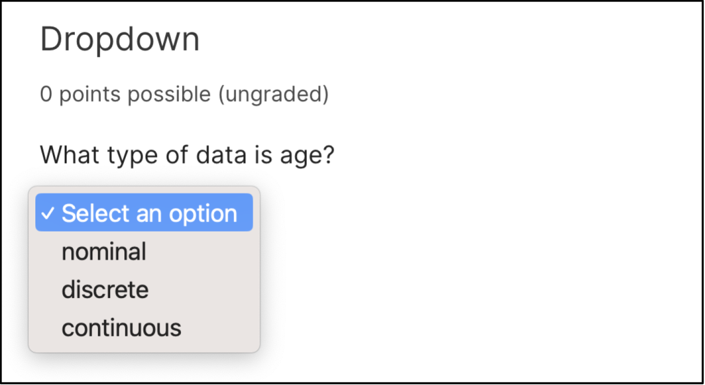
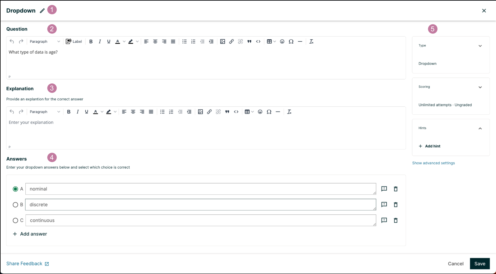
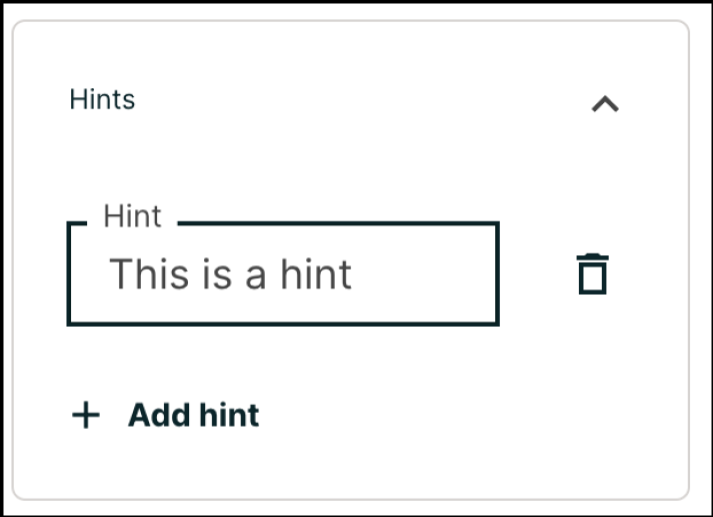

11.10. Dropdown Problem#
Note
EdX offers full support for this problem type.
The dropdown problem type is a simple problem type that can be added to any course. Dropdown problems include a question or prompt and several answer options with a single correct answer. By adding hints, feedback, or both, you can give learners guidance and help when they work on a problem.
For more information about the simple problem types, see Working with Problem Components.
11.10.1. Overview#
In dropdown problems, learners select one answer from a list of answer options. Unlike single select problems, where the answer choices are always visible directly below the question, the answer options for dropdown problems do not appear until the learner selects the dropdown arrow.
Dropdown problems can only have one correct answer per question, we recommend adding a “Both B & C” answer where multiple selections could be correct.
11.10.1.1. Example Dropdown Problem#
In the LMS, learners select a single answer option to complete a dropdown problem. An example of a dropdown problem from the learner’s perspective follows.
{kind=link}
11.10.2. Adding a Dropdown Problem#
You add dropdown problems in Studio by selecting the Problem component. In the problem editor, select the Dropdown option. Fill in the fields on this screen to create your problem.
{kind=link}
Creating a dropdown problem is as simple as:
Editing the Display Name. Click the pen symbol to edit.
Filling in the Question field.
Filling in the Explanation field. When this is shown to learners is based on the selection in the Show answer panel on the right.
Filling in the Answer fields. Select the correct answer by ticking off the radio button. Additional answers can be added by clicking the Add answer button. Answers can be deleted by clicking the trash can icon. Feedback can be provided for each answer. More information on feedback can be found in the following section.
Selecting and filling in any desired settings on the right.
If you have any questions on the specifics of using the simple editor, please check out The Simple Editor and Defining Settings for Problem Components.
11.10.2.1. Adding Feedback#
For an overview of feedback in problems, see Adding Feedback and Hints to a Problem. You can add feedback for each of the answer options you provide in the problem. Use the following guidelines when providing feedback.
Use feedback for the incorrect answers to target common misconceptions and mistakes.
Ensure feedback provides some guidance to the learner about how to arrive at the correct answer.
Use feedback for the correct answer to reinforce why the answer is correct. Because learners are able to guess, ensure that feedback provides a reason why the answer is correct for learners who might have selected that answer by chance.
{kind=link}
11.10.2.2. Adding Hints#
You can add hints to a dropdown problem. For an overview of hints in problems, see Adding Feedback and Hints to a Problem.
In the settings panels on the right of the editor, you’ll find a Hints panel.
{kind=link}
Click the Add hint button to add a new hint text field. To delete any hints you’ve added, click the trash can icon next to its respective hint field.
Note
You can configure any number of hints. The learner views one hint at a time and views the next one by selecting Hint again.
11.10.3. Editing Dropdown Problems using the Advanced Editor#
If the simple editor is not enough to meet your needs, you can switch over to the advanced editor. In the setting panels on the right of the editor, click Show advanced settings, then scroll down and click Switch to advanced editor.
You can use the advanced editor to identify the elements of a dropdown problem with OLX. For more information, see Dropdown Problem OLX Reference. To format equations, you can use MathJax. For more information, see MathJax for Mathematics.
You can see the OLX for the example problem from the Overview section below.
<problem>
<optionresponse>
<label>What type of data is age?</label>
<optioninput options="('Nominal','Discrete','Continuous')"
correct="Continuous"></optioninput>
</optionresponse>
</problem>
Note
You can begin work on the problem in the simple editor, and then switch to the advanced editor. However, after you save any advanced OLX changes you make in the advanced editor, you may not be able to cannot switch back to the simple editor.
11.10.3.1. Adding Feedback#
In the advanced editor, you configure feedback with the following syntax.
<option correct="False">Option Label
<optionhint>Feedback for when a learner selects this incorrect answer.</optionhint>
</option>
For example, the following problem has feedback for each answer.
<problem>
<optionresponse>
<label>A/an ________ is an example of a vegetable.</label>
<optioninput>
<option correct="False">apple
<optionhint>An apple is the fertilized ovary that comes from an
apple tree and contains seeds classifying it as a fruit.</optionhint>
</option>
<option correct="False">pumpkin
<optionhint>A pumpkin is the fertilized ovary of a squash plant and
contains seeds classifying it as a fruit.</optionhint>
</option>
<option correct="True">potato
<optionhint>A potato is an edible part of a plant in tuber form and
is classified as a vegetable.</optionhint>
</option>
<option correct="False">tomato
<optionhint>Many people mistakenly think a tomato is a vegetable.
However, because a tomato is the fertilized ovary of a tomato plant
and contains seeds it is classified as a fruit.</optionhint>
</option>
</optioninput>
</optionresponse>
</problem>
11.10.3.1.1. Customizing Feedback Labels#
By default, the feedback labels shown to learners are Correct and Incorrect. If you do not define feedback labels, learners see these terms when they submit an answer, as in the following example.
Incorrect: A pumpkin is the fertilized ovary of a squash plant and contains
seeds classifying it as a fruit.
You can configure the problem to override the default labels. For example, you can configure a custom label for a specific wrong answer.
Not Quite: Many people mistakenly think a tomato is a vegetable. However,
because a tomato is the fertilized ovary of a tomato plant and contains seeds
it is classified as a fruit.
In the advanced editor, you configure custom feedback labels with the following syntax.
<choice correct="true or false">Answer
<choicehint label="Custom Label">Feedback for learners who select this
answer.</choicehint>
</choice>
For example, the feedback for the following answer option is configured to use a custom label.
<choice correct="false">tomato
<choicehint label="Not Quite">Many people mistakenly think a tomato is a
vegetable. However, because a tomato is the fertilized ovary of a tomato
plant and contains seeds, it is a fruit.</choicehint>
</choice>
Note
The default labels Correct and Incorrect display in the learner’s requested language. If you provide custom labels, they display as you define them to all learners. They are not translated into different languages.
11.10.3.2. Adding Hints#
In the advanced editor, you add the <demandhint> element immediately before
the closing </problem> tag, and then configure each hint using the
<hint> element.
<problem>
.
.
.
<demandhint>
<hint>Hint 1</hint>
<hint>Hint 2</hint>
<hint>Hint 3</hint>
</demandhint>
</problem>
For example, the following OLX for a single select problem shows two hints.
<problem>
<multiplechoiceresponse>
.
.
.
</multiplechoiceresponse>
<demandhint>
<hint>A fruit is the fertilized ovary from a flower.</hint>
<hint>A fruit contains seeds of the plant.</hint>
</demandhint>
</problem>
11.10.4. Dropdown Problem OLX Reference#
11.10.4.1. Template#
<problem>
<optionresponse>
<label>Question or prompt text</label>
<description>Optional information about how to answer the question</description>
<option correct="False">Option Label
<optionhint>Feedback for when learner selects this answer.</optionhint>
</option>
<option correct="True">Option Label
<optionhint>Feedback for when learner selects this answer.</optionhint>
</option>
<solution>
<div class="detailed-solution">
<p>Explanation or Solution Header</p>
<p>Explanation or solution text</p>
</div>
</solution>
</optionresponse>
<demandhint>
<hint>Hint 1</hint>
<hint>Hint 2</hint>
<hint>Hint 3</hint>
</demandhint>
</problem>
11.10.4.2. Elements#
For dropdown problems, the <problem> element can include this
hierarchy of child elements.
<optionresponse>
<label>
<description>
<optioninput>
<option>
<optionhint>
<solution>
<demandhint>
<hint>
In addition, standard HTML tags can be used to format text.
11.10.4.2.1. <optionresponse>#
Required. Indicates that the problem is a dropdown problem.
11.10.4.2.1.1. Attributes#
None.
11.10.4.2.1.2. Children#
<label><description><optioninput><solution>
11.10.4.2.2. <label>#
Required. Identifies the question or prompt. You can include HTML tags within this element.
11.10.4.2.2.1. Attributes#
None.
11.10.4.2.2.2. Children#
None.
11.10.4.2.3. <description>#
Optional. Provides clarifying information about how to answer the question. You can include HTML tags within this element.
11.10.4.2.3.1. Attributes#
None.
11.10.4.2.3.2. Children#
None.
11.10.4.2.4. <optioninput>#
Required. Designates an answer option.
11.10.4.2.4.1. Attributes#
Attribute |
Description |
|---|---|
|
Either this attribute or a set of
|
|
Used if the |
11.10.4.2.4.2. Children#
<option><optionhint>
11.10.4.2.5. <option>#
Designates an answer option. Either a set of <option> child elements or the
options attribute for <optioninput> is required.
11.10.4.2.5.1. Attributes#
Attribute |
Description |
|---|---|
|
Required. Indicates whether the answer option is correct or incorrect.
When set to |
If the <option> element is used, <optionhint> is a child of
<option>.
11.10.4.2.6. <optionhint>#
Optional. Specifies feedback for the answer.
11.10.4.2.6.1. Attributes#
None.
11.10.4.2.6.2. Children#
None.
11.10.4.2.7. <solution>#
Optional. Identifies the explanation or solution for the problem, or for one of the questions in a problem that contains more than one question.
This element contains an HTML division <div>. The division contains one or
more paragraphs <p> of explanatory text.
11.10.4.2.8. <demandhint>#
Optional. Specifies hints for the learner. For problems that include multiple questions, the hints apply to the entire problem.
11.10.4.2.8.1. Attributes#
None.
11.10.4.2.8.2. Children#
<hint>
11.10.4.2.9. <hint>#
Required. Specifies additional information that learners can access if needed.
11.10.4.2.9.1. Attributes#
None.
11.10.4.2.9.2. Children#
None.